3. Como solicitar financiamento pelo site
Created Wednesday 21 May 2014 - Atualizado em 07/01/2016
Inclusão de proposta no site da Fomento Paraná
Somente poderão ser feitas solicitações online de financiamentos ACIMA de R$ 15 mil e empresa deve possuir CNPJ.
1º PASSO: cliente deve acessar o site da Fomento Paraná: www.fomento.pr.gov.br
2º PASSO: no menu superior direito localizar a opção ACESSO CLIENTE
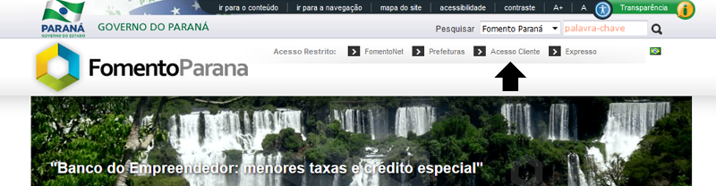
3º PASSO: na tela seguinte clicar em NOVO USUÁRIO
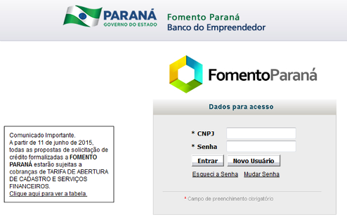
4º PASSO: digitar os dados básicos de usuário e clicar em SALVAR
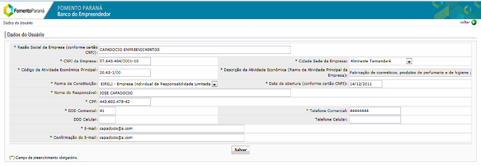
5º PASSO: na tela seguinte clicar em NOVA PROPOSTA e preencher dados solicitados
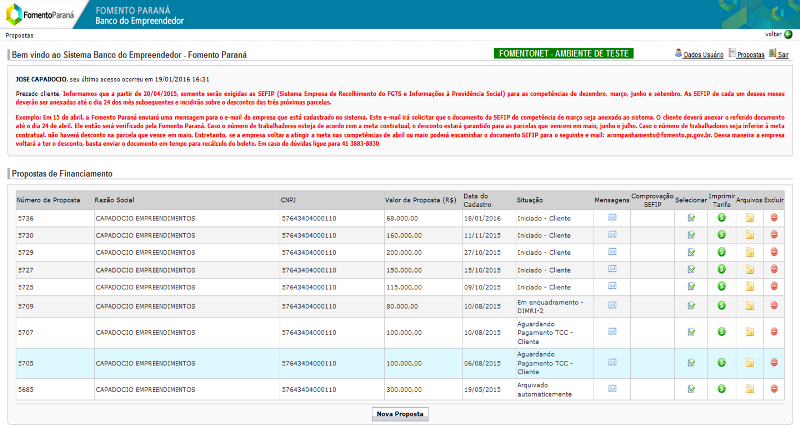
** Seguir orientações de 3. Como solicitar financiamento pelo site:1. Iniciado - Fase do Cliente
Fases de tramitação da proposta
Uma proposta de financiamento passa por diversas fases sequenciais em que há ação por parte do cliente ou análise por parte da Fomento.
Atualmente são 9 (nove) etapas a serem cumpridas para que haja conclusão de análise do financiamento, algumas etapas são responsabilidade do cliente e outras são responsabilidade da Fomento. Estas fases estão divididas em:
- Fases do Cliente: ou seja, nessas fases o cliente deve incluir/ajustar informações para dar prosseguimento na análise de seu pedido.
- Fases da Fomento: ou seja, nessas fases o cliente deve aguardar um parecer da Fomento Paraná, até a conclusão das análises em cada uma das etapas.
Links de acesso para instruções das fases do cliente:
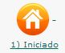 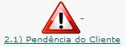 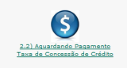 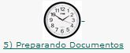
Iniciado; Pendente Cliente; Aguardando Pagto TCC; Dados Cadastrais; Preparando Documentos; Dados do Projeto;
Links de acesso para instruções das fases da Fomento:
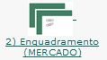 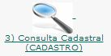 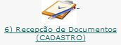 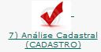 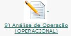
Enquadramento; Consulta Cadastral; Recepção de documentos; Análise Cadastral; Análise de Operação;
Como o cliente fica sabendo o status de sua proposta?
Todas as fases em que a Fomento conclui análise, o analista inclui seu parecer no campo "MENSAGENS" dentro da proposta, esse parecer também é enviado automaticamente através do e-mail em que ele cadastrou no momento em que sua senha de acesso e efetivou seu login.
Backlinks: 5. Linhas de Financiamento:BNDES PSI 5. Linhas de Financiamento:Programa Manutencao Empresas (Capital Giro) 1. Wiki Fomento - Atendimento ao Cliente 5. Linhas de Financiamento:BNDES Automatico 5. Linhas de Financiamento:BNDES Finame 5. Linhas de Financiamento:Banco do Empreendedor - MPE 2. Identificando a necessidade do cliente